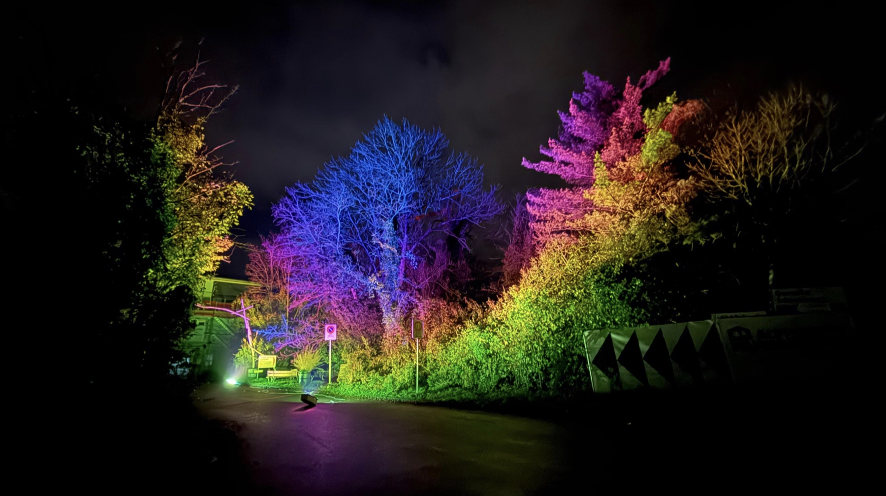

04.–05. SEPTEMBER 2026 · DORNACHArtXMusic
ArtXMusic
Festival.
Kunst und Musik an einem Ort.
Unser Festival in der Tipioase.
Eine Plattform für neue Stimmen.
Ein Raum für das, was uns verbindet.

Aktuell ist kein neuer Termin angekündigt.
Bis dahin: Entdecke unseren ersten Festivalrückblick.
Kunst und Musik an einem Ort.
Unser Festival in der Tipioase.
Nicht jede starke Idee steht schon im Rampenlicht. Wir schaffen Raum dafür.
ArtXMusic verbindet Kunst und Musik. Unser «X» steht für die Begegnung dazwischen – zwischen Menschen, Ausdrucksformen und neuen Perspektiven.
Als Verein geben wir besonders aufstrebenden Kunstschaffenden, Musiker:innen und DJs eine Plattform. Für erste Auftritte, neue Verbindungen und kreative Entwicklung.
Mit Events, Projekten und Kooperationen fördern wir Austausch, Gemeinschaft und kulturelle Vielfalt.
Deine Idee hat hier PlatzEvents & kreative Begegnungen
Michelle kommt ursprünglich aus dem Transport- und Zollbereich. Über praktische Projekte und ihre Ausbildung zur Eventmanagerin fand sie zur Veranstaltungswelt – und lernte dabei Vincent kennen.
Mit ihrem gemeinsamen Abschlussprojekt «ArtConnection» legten sie den Grundstein für die Idee, neuen kreativen Stimmen eine Plattform zu geben. Diese Erfahrung bringt sie in ArtXMusic ein.
Kunst, Raum & Licht
Adriano ist Galerist, Kurator, Lichtdesigner und Inhaber von arkadia-design.ch. Er verbindet Kunst, Raum und Licht zu erlebbaren Atmosphären.
Mit der Programmgestaltung von Halle 80 und dem Hair Atelier schafft er Raum für zeitgenössische Kunst und Dialog. Offenheit, Experimentierfreude, klare Formen und ein bewusster Umgang mit Materialien prägen seine Arbeit.
Musik, Visuals & Verbindung
Vincent beschäftigt sich mit visueller Kommunikation und digitalen Räumen an der Hochschule für Gestaltung und Kunst Basel. Seine kreativen Felder reichen von DJing und Musikproduktion bis zu Visuals und Kunst.
Aus seiner Erfahrung mit Kunst- und Musikevents wächst der Wunsch, Menschen zusammenzubringen. Er möchte Orte schaffen, an denen Austausch, gemeinsame kreative Energie und Zugehörigkeit entstehen.
Du machst Kunst oder Musik? Du möchtest mitgestalten oder mit uns zusammenarbeiten? Lass uns ins Gespräch kommen.
Lass uns etwas bewegen Interesse an einer Mitgliedschaft? Schreib uns. ↗